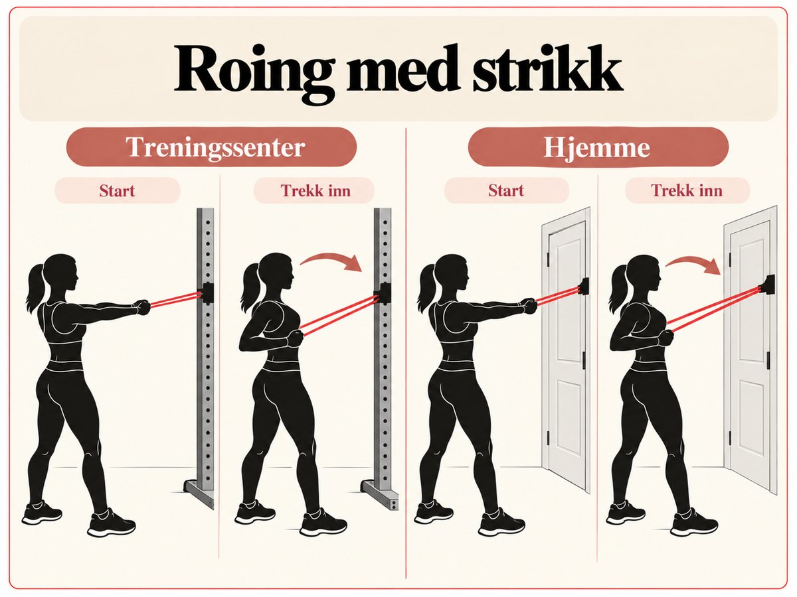
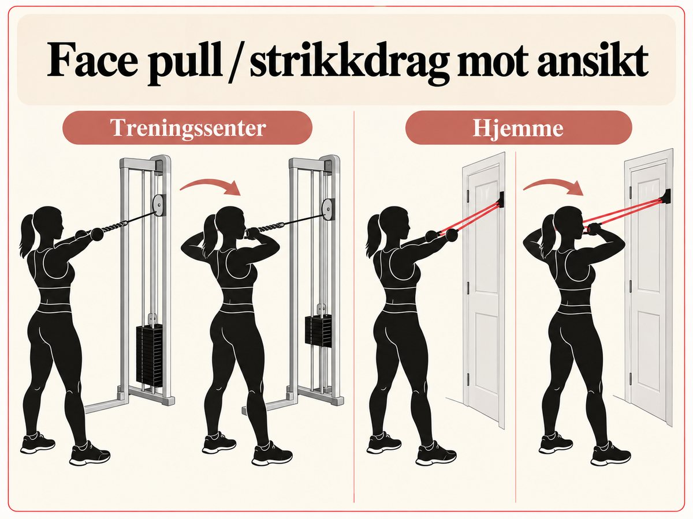
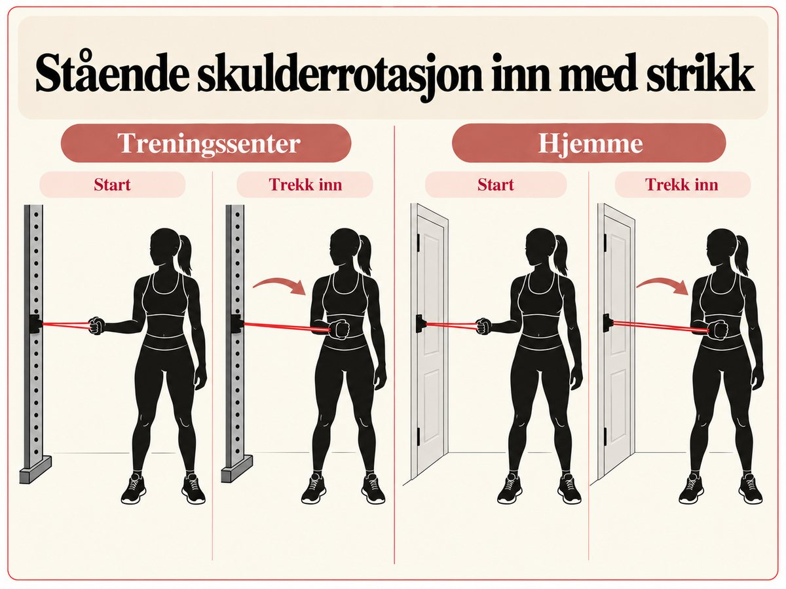
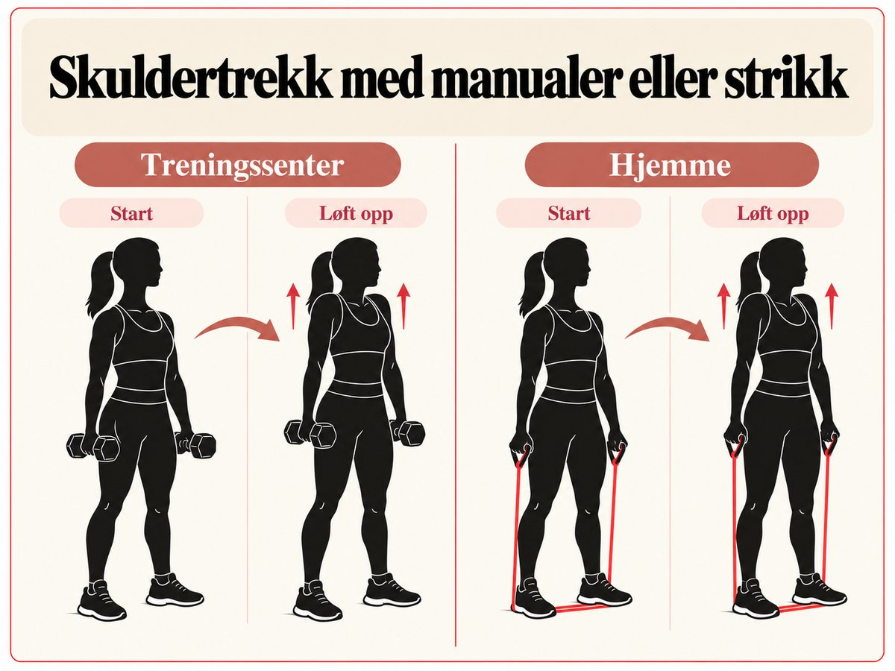
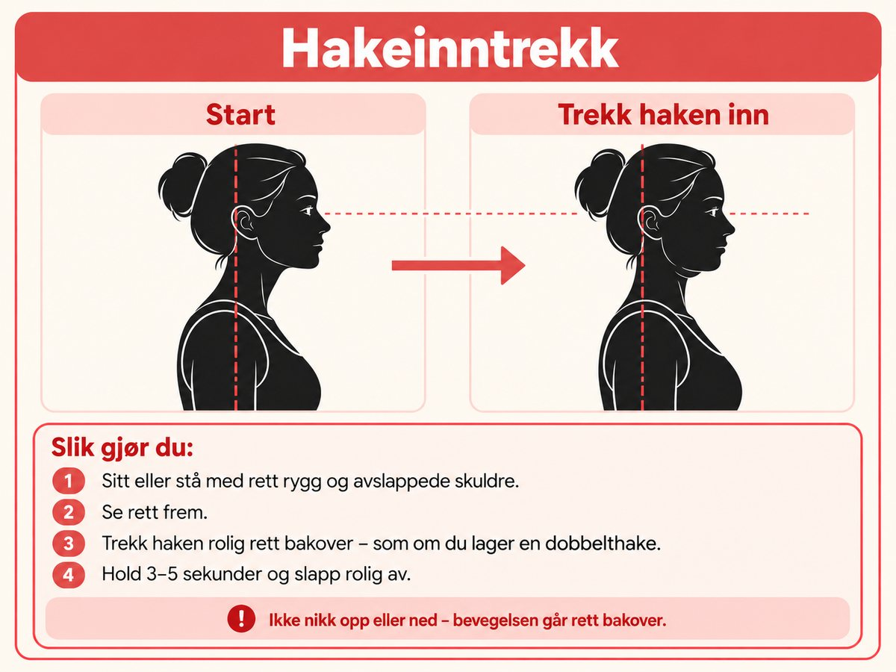
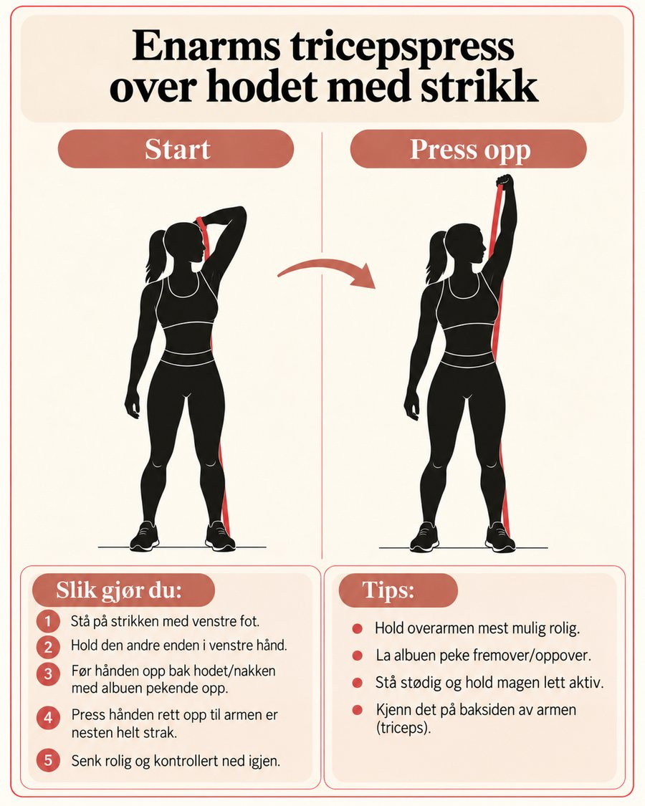
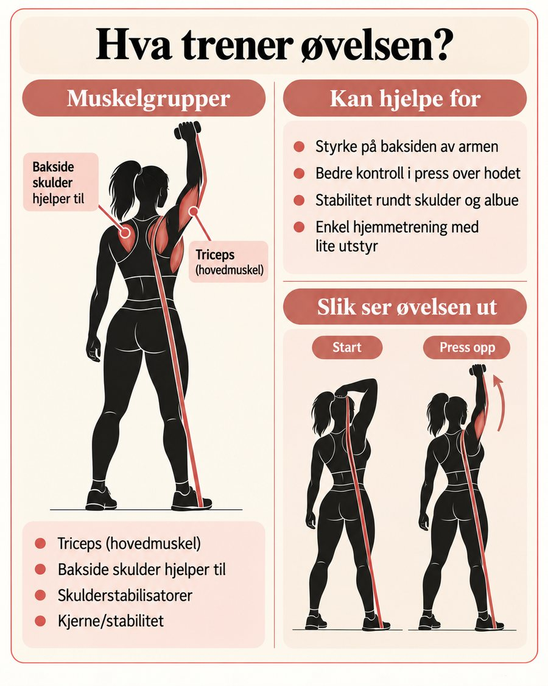

Skulder- og nakkeøvelser
For deg med stiv nakke, stressnakke eller stive skuldre: en kort pauseserie du kan gjøre rett fra stolen, og styrkeøvelser med strikk som gjør skuldre og øvre rygg sterkere over tid.
For deg med stiv nakke, stressnakke eller stive skuldre: en kort pauseserie du kan gjøre rett fra stolen, og styrkeøvelser med strikk som gjør skuldre og øvre rygg sterkere over tid.
Dette hjelper mest: bevegelse ofte (små pauser i løpet av dagen), styrketrening for skuldre og øvre rygg 2–3 ganger i uka, og rolig pust for å senke skuldrene når du er stresset. Prøv gjerne pusteøvelsene sammen med pauseserien.
Sitt godt i stolen med rak rygg. Timeren under leder deg gjennom alle øvelsene etter tur, totalt ca. 3 minutter. Gjør serien 1–3 ganger om dagen, gjerne når du kjenner at skuldrene kryper opp.
Klar til å starte
Trykk start når du er klar
Sterke muskler rundt skulderbladene og i øvre rygg avlaster nakken. Du trenger bare en treningsstrikk og et feste, for eksempel et dørfeste hjemme eller et stativ på treningssenteret.

Fest strikken i brysthøyde. Stå med armene strake fremover, og trekk hendene inn mot brystkassen mens albuene går bakover langs kroppen. Klem skulderbladene sammen og ned, hold et lite øyeblikk, og slipp rolig tilbake.
Styrker musklene mellom skulderbladene og gir bedre holdning. Hold skuldrene langt fra ørene hele veien.

Fest strikken (eller tauet i kabelen) litt over hodehøyde. Trekk hendene mot ansiktet, med albuene høyt og ut til siden, til hendene er ved ørene. Før hendene litt bakover til slutt, og gå rolig tilbake.
Trener bakside skulder og musklene som holder skulderbladene på plass. En av de beste øvelsene for deg som sitter mye foroverbøyd.

Fest strikken i albuehøyde og stå med siden til festet. Hold albuen inntil siden med 90 grader bøy. Før hånden rolig inn foran magen, og slipp kontrollert tilbake. Bytt side.
Styrker rotatormansjetten, de små musklene som holder skulderleddet stabilt. Bruk en lett strikk. Rull gjerne et lite håndkle under albuen så den holder seg på plass.

Stå med en manual i hver hånd, eller stå på strikken og hold én ende i hver hånd. Løft skuldrene rett opp mot ørene, hold et lite øyeblikk, og senk dem rolig helt ned. Armene er strake hele tiden, og du ruller ikke skuldrene.
Styrker musklene øverst på skuldrene, de som ofte er stive og vonde ved stressnakke. Når de blir sterkere, tåler de belastningen gjennom dagen bedre. Senk skuldrene ekstra langsomt.

Sitt eller stå med rett rygg og avslappede skuldre, og se rett frem. Trekk haken rolig rett bakover, som om du lager en dobbelthake. Hold 3–5 sekunder og slipp rolig av. Ikke nikk opp eller ned, bevegelsen går rett bakover.
Styrker de dype musklene foran i nakken og motvirker at hodet glir fremover. Du kan også gjøre den liggende på ryggen med hodet mot gulvet, eller flere ganger i løpet av dagen.
Har du tid og overskudd, kan du avslutte med denne. Den trener armene og gir bedre kontroll når du løfter over hodet.

Stå på strikken med den ene foten og hold den andre enden i hånden på samme side. Før hånden opp bak hodet med albuen pekende opp. Press hånden rett opp til armen er nesten strak, og senk rolig ned igjen. Gjør like mange på hver side.
Trener baksiden av armen. Kjenner du at det klemmer i skulderen eller nakken, bruk lettere strikk eller hopp over øvelsen.

| Hver dag | Pauseserien fra stolen 1–3 ganger, og et par minutter med rolig pust når du er stresset. |
|---|---|
| 2–3 dager | Styrkeøvelsene i del 2. Tar ca. 6–7 minutter, og passer fint etter en gåtur eller i en vanlig treningsøkt. |
| Etter 4–6 uker | Bytt til en litt tyngre strikk når 15 repetisjoner kjennes lett. |